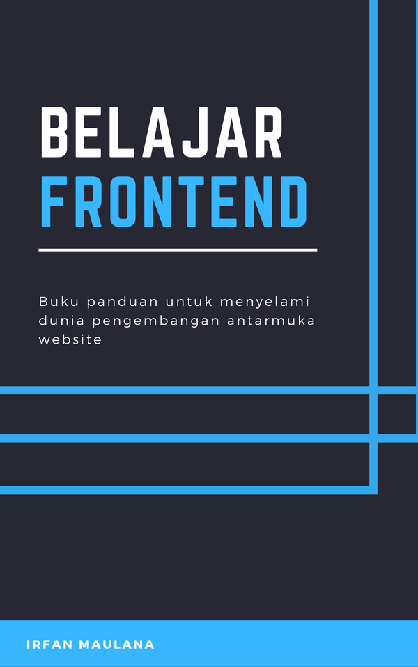

Ebook Belajar Frontend
Buku panduan untuk menyelami dunia pengembangan antarmuka website
![[object Object]](/ebook-belajar-frontend/img/undraw_static_assets_rpm6.svg)
Materi Lengkap
Materi disusun secara berjenjang agar mudah diikuti oleh para pemula maupun mereka yang sudah di tingkat menengah dan lanjutan.
![[object Object]](/ebook-belajar-frontend/img/undraw_make_it_rain_iwk4.svg)
Tersedia Gratis
Buku ini tersedia Gratis bagi mereka yang memiliki niat besar untuk belajar.
![[object Object]](/ebook-belajar-frontend/img/undraw_ideas_s70l.svg)
Kontribusi Komunitas
Kalian bersama dengan komunitas memiliki peluang untuk ikut berkontribusi dengan memperbaiki maupun menambah materi di dalam buku ini.